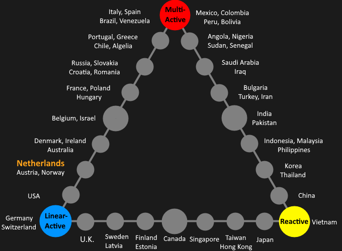
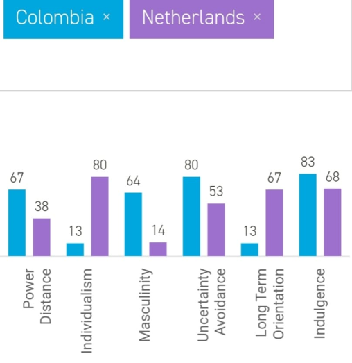
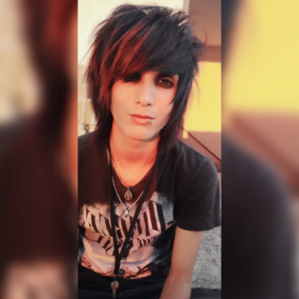
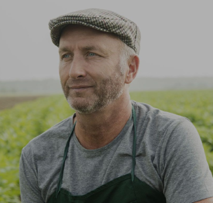

BRIEF LOOK TO A DUTCH
When we look for the first time about the Dutch we find that they are told that they are stingy and that they always like to ride a bike everywhere and get high mainly with marijuana, tall with blue eyes and finally they are always associated with cheeses since they are good making them.

Week 1, 03 Jan 2020
GENDER STEREOTYPES
In this regard we easily tend to relate to their hypermasculinity in the case of men, but both as men and women both relate to being tall and blond hair and blue eyes and women have good bodies also are introverted thanks to the machismo they suffer, few are those with important positions, most do not reach a level of university study.week 2, 10 Feb 2020
THE LEWIS MODEL AND DUTCH ARRIVING IN BARRANQUILLA
The Lewis model proposes that we can classify cultures into three groups (Multi-active, Linear-Active, Reactive) as a way to categorize each culture. In and as this blog we talk about Dutch, these are categorized more as Linear-active. They are task-oriented, highly-organized planners, who complete action chains by doing one thing at ta time, preferably in accordance with a schedule
In case a Dutchman comes to study in Barranquilla. This will have to face a huge change in their day to day, a significant change and that will have to adapt is the inpuntality that many Barranquilleros have, also in the way of talking about the Barranquilleros who talk about everything, jargon and be interrupted while you speak, prepare for unplanned activities.
week 3, 16 Feb 2020
HOFSTEDE'S MODEL - DUTCH Vs COLOMBIANS
We think this is not shock us because we are comparing a developing country in front of a developed country and obviously that's the reason of why Colombia and Netherlands are so different. There aren't any similaritiesThe major differences are in the power distance, the uncertainty avoidance and masculinity. And this is because the big difference between the upper class and lower-middle class Further the masculinity is because the bad culture in Colombia of maleness.
week 4, 25 Feb 2020
SUBCULTURES
- Emo's:

The culture of Emo’s started with music in the 80’s. The music consisted of hardcore, pop and rock. At the end of 90s, the emo-culture started to be a lifestyle with an own fashion style, especially for youth. The Emo culture is actually a subculture of the Gothics, but there are more Emo’s in Holland than Gothics. The fashion of Emo’s is a mix of many others styles with of alternative clothes. There are much identifying marks for the style of the Emo’s, like: dark clothes, long black hair and one part of the hair mostly conceals one eye. the culture of the Gothics started with the New Wave, while the culture of the Emo’s started with the Hardcore/punk music. Many people think that the stereotype of the Emo is of depressive, shy and wants to isolate him/herself from society In the Lewis model the Dutch Emos are reactive beacuse the usually never confronts you, they have subtle body language, usually they think their answers before telling
- Farmers:

A typical Dutch subculture is the culture of the ‘farmers’. They live, of course, on a farm and they often wear blouses with a blocked pattern which it calls ‘houthakkersblouse’ and jeans which are way too long and wide and they wear worn-out shoes. There are many of people who think that it’s characteristic for farmers that they are rude and that they can act like a real bumpkin with bad manners, eating with open mouth, but that’s not always true of course. Farmers like typical Dutch music and farmers really like to drink beer. When they have a party, it is usually in a shed or a barn. For farmers it is not a decision that they want to live like that or that they decide to live like that because of political or filosofical norms. But a farm is mostly a family business, so the son usually takes over the farm. And they are used to the ‘rude’ behaviour because their parents and grandparents also behave like that so famers learned, that when they were young and adopt this behaviour. In the Lewis model the Dutch Farmers are linear active but less if you compare them with other subcultures there because they have the characteristics but are more happier or are more outgoing.